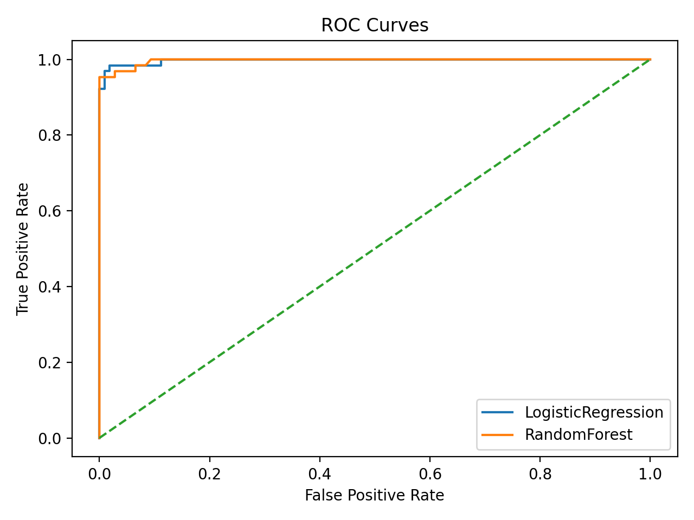
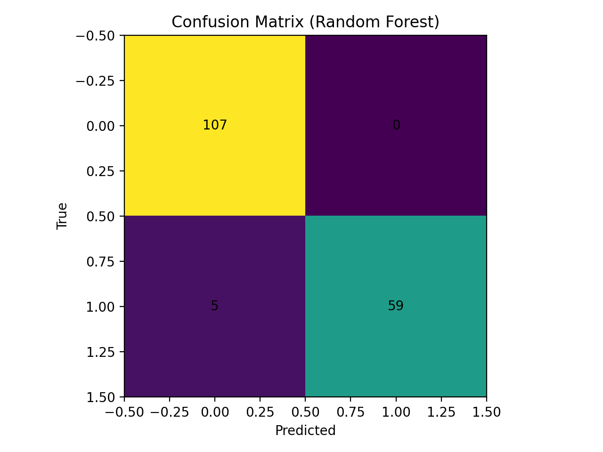
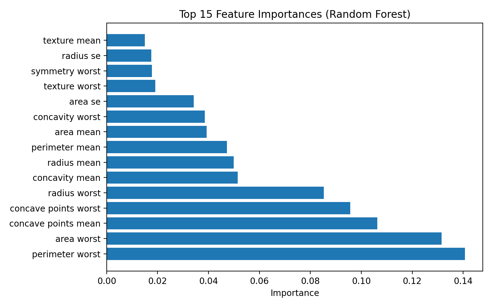

專案簡介
本專案使用公開臨床資料集 Wisconsin Diagnostic Breast Cancer (WDBC)， 完成完整資料分析流程：數據讀取 → 預處理 → 統計分析 → 預測模型建立 → 模型評估與可視化， 並以 GitHub Pages 公開展示成果與 LaTeX PDF 報告。
成果總覽（測試集）
Accuracy ≈ 0.971
Logistic Regression / Random Forest（同一切分）
ROC-AUC ≈ 0.997
兩模型皆具高辨識度
分析流程（對應評分點）
- 数据读取：pandas 讀取 WDBC CSV，建立二元標籤（M=1 / B=0）
- 数据预处理：缺失值檢查、特徵標準化、stratified train-test split
- 统计分析：描述性統計（mean±sd）、Welch’s t-test 組間比較，輸出 baseline table（LaTeX）
- 预测模型建立：Logistic Regression（基線、可解釋）與 Random Forest（非線性）
- 评估与可视化：Accuracy、ROC-AUC、Sensitivity/Specificity，ROC/Confusion Matrix/Feature Importance
模型解釋（Interpretation）
Random Forest 的特徵重要性顯示，腫瘤尺寸相關變數（如 radius/perimeter/area 類指標）對惡性預測貢獻最大， 與臨床上對腫瘤大小作為風險訊號的認知一致，提升模型結果的可信度。
可視化結果（點圖可放大）


